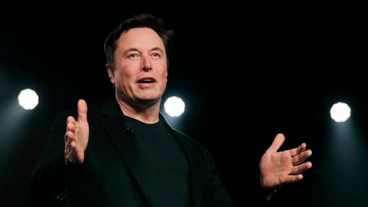

Elon Musk
Master engineer, founder and CEO of SpaceX, Tesla, The Boring Company, Neuralink and Open AI.

Elon speaking at a Tesla event.
Childhood.
- Elon Reeve Musk was born on June 28, 1971 in Pretoria, one of the capital cities of South Africa and was baptized into an Anglican church.
- Musk has British and Pennsylvania Dutch ancestry. His mother is Maye Musk (née Haldeman), a model and dietitian born in Saskatchewan, Canada and raised in South Africa.
- His father is Errol Musk, a South African electromechanical engineer, pilot, sailor, consultant, and property developer who was a half-owner of a Zambian emerald mine near Lake Tanganyika.
- Musk has a younger brother Kimbal (born 1972) and a younger sister Tosca (born 1974).
- Musk's family was wealthy during his youth. His father was elected to the Pretoria City Council as a representative of the anti-apartheid Progressive Party, with his children reportedly sharing their father's dislike of apartheid.
- When Musk was 10, he developed an interest in computing and video games, so he brought a Commodore VIC-20 and taught himself programming from a user manual.
- At age 12, he sold his BASIC-based game Blastar to PC and Office Technology magazine for approximately $500.
Education
- He attended Waterkloof House Preparatory School, Bryanston High School and graduated from Pretoria Boys High School.
- Musk applied for a Canadian passport through his Canadian-born mother, knowing that it would be easier to immigrate to the United States this way.
- While waiting for the documentation, he attended the University of Pretoria for five months; this allowed him to avoid mandatory service in the South African Defence Force.
- Musk arrived in Canada in June 1989 and lived with a second cousin in Saskatchewan for a year, working odd jobs at a farm and lumber-mill. In 1990, he entered Queen's University in Kingston, Ontario. Two years later, he transferred to the University of Pennsylvania, where he completed studies for a Bachelor of Arts degree in physics and a Bachelor of Science degree in economics from the Wharton School in 1995.
- In 1994, Musk held two internships in Silicon Valley: one is at the energy storage startup Pinnacle Research Institute, which investigated electrolytic ultracapacitors for energy storage, and another is at the Palo Alto-based startup Rocket Science Games.
- In 1995, he was accepted to a Doctor of Philosophy (Ph.D.) program in materials science at Stanford University. However, Musk decided to join the Internet boom instead and applied for a job at Netscape, to which he reportedly never received a response.
Buisness Career
- Later in 1995, Musk, his brother Kimbal, and Greg Kouri borrowed funds from Musk's father and founded Zip2. The company developed an Internet city guide with maps, directions, yellow pages, and marketed it to newspapers.
- Later in 1999, Musk co-founded X.com, an online financial services and e-mail payment company. X.com was one of the first federally insured online banks and over 200,000 customers joined after its initial months of operation.
- In early 2001, Musk became involved with the nonprofit Mars Society and discussed funding plans to place a growth-chamber for plants on Mars. In October the same year, he traveled to Moscow with Jim Cantrell and Adeo Ressi to buy refurbished intercontinental ballistic missiles (ICBMs) that could send the greenhouse payloads into space. He met with companies NPO Lavochkin and Kosmotras; however, Musk was seen as a novice and the group returned to the United States empty-handed. In February 2002, the group returned to Russia with Mike Griffin (president of In-Q-Tel) to look for three ICBMs. They had another meeting with Kosmotras and were offered one rocket for $8 million, which Musk rejected. He instead decided to start a company that could build affordable rockets. With $100 million of his early fortune, Musk founded SpaceX in May 2002 and became the company's CEO and Chief Engineer.
- Tesla, Inc.—originally Tesla Motors—was incorporated in 2003 by Martin Eberhard and Marc Tarpenning, who financed the company until the Series A round of funding. Both men played active roles in the company's early development prior to Musk's involvement. Musk led the Series A round of investment in February 2004; he invested $6.5 million, became the majority shareholder, and joined Tesla's board of directors as chairman. Musk took an active role within the company and oversaw Roadster product design but was not deeply involved in day-to-day business operations.
- In 2016, Musk co-founded Neuralink, a neurotechnology startup company with an investment of $100 million. Neuralink aims to integrate the human brain with artificial intelligence (AI) by creating devices that are embedded in the brain to facilitate its merging with machines. Such technology could enhance memory or allow the devices to communicate with software.
- In 2017, Musk founded The Boring Company to construct tunnels. Musk revealed plans for specialized high occupancy vehicles that could travel up to 150 miles per hour, circumventing above-ground traffic in major cities. Early in 2017, the company began discussions with regulatory bodies and initiated construction of a 30-foot (9.1 m) wide, 50-foot (15 m) long, and 15-foot (4.6 m) deep "test trench" on the premises of SpaceX's offices as it required no permits. The Los Angeles tunnel, less than two miles in length, debuted to journalists in 2018. It used Tesla Model X's and was reported to be a rough ride and travel at suboptimal speeds.
Zip2
Xcom and PayPal
SpaceX
Tesla
Neuralink
The Boring Company
Wealth
- Musk made $175.8 million when PayPal was sold to eBay in 2002. He was first listed on the Forbes Billionaires List in 2012 with a net worth of $2 billion.
- At the start of 2020, Musk had a net worth of $27 billion. By the year's end his net worth had increased by $150 billion, largely driven by his ownership of around 20% of Tesla stock.